Nine Stitch mockups beside the same screens rendered from the current app at 390×844 with synthetic data. Take Stitch's layout ideas; keep every medical sentence from the app, because the app's are sourced and reviewed.
Cycle-length bars and "seen in X of Y cycles" symptoms by phase. The biggest gap: PCOS users want to see their own variation, and it feeds the visit pack.
New feature · needs a rule for the minimum cycles"Say it to log" first, then two or three chips for her stage. Logging is the daily habit; today it sits under four cards.
Layout changeOne card that sums up this cycle's fluid, ovulation tests and temperature, with no verdict.
Small · reads existing logsSheet over Today, chips with detail and ×, "Save 2 entries to my phone".
SmallA diagnosis refusal offers "Prepare doctor-visit pack" on the same card.
SmallHer appointment and her own questions, linked to the visit pack.
MediumSolid logged, outline likely, dashed possible; Hijri month range in the header.
Small · the confidence level already existsWordmark, prepared date, numbered sections, share sheet.
Small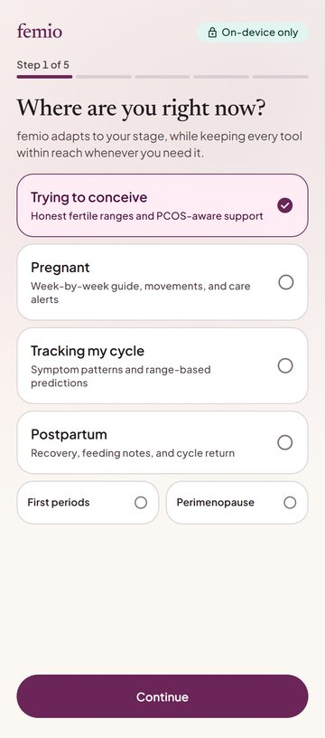
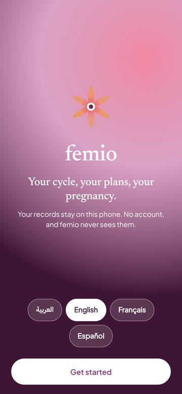
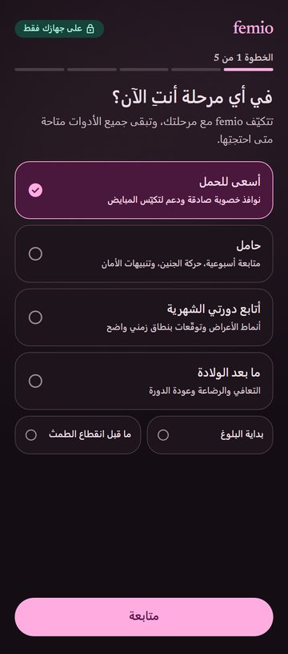
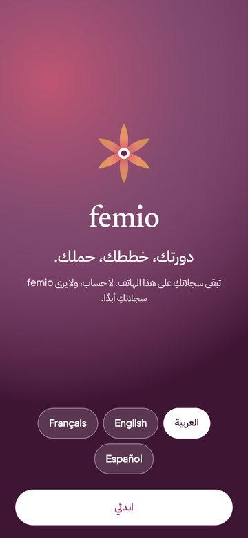
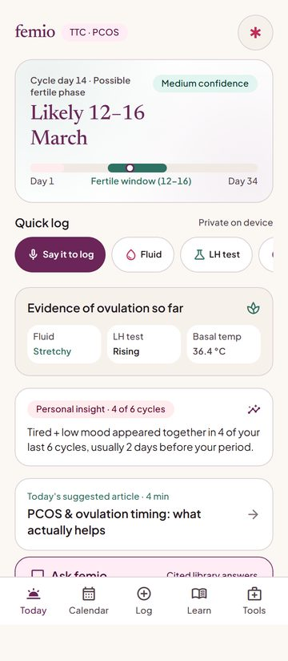
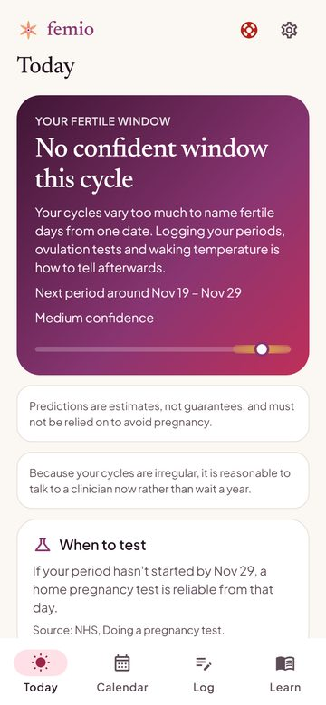
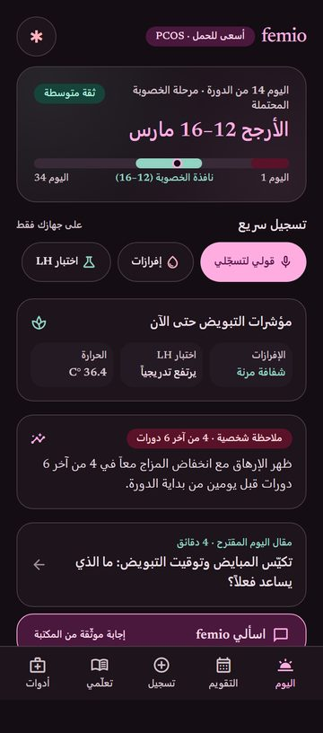
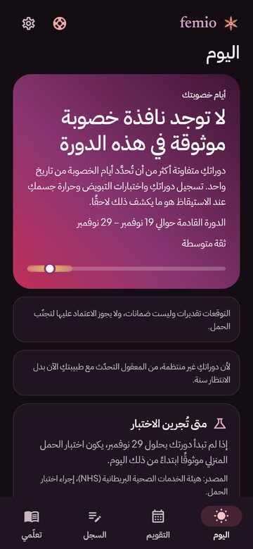
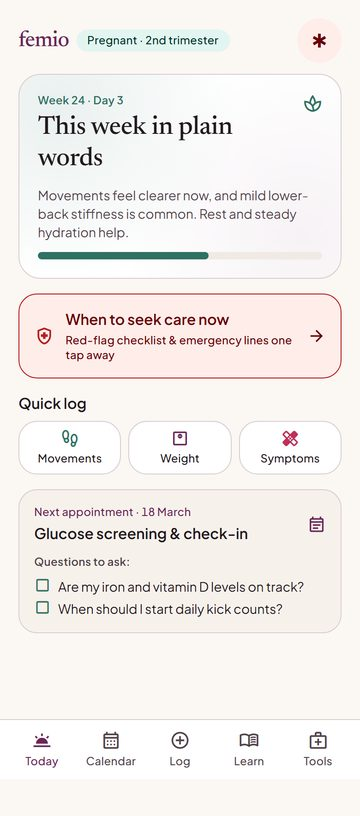
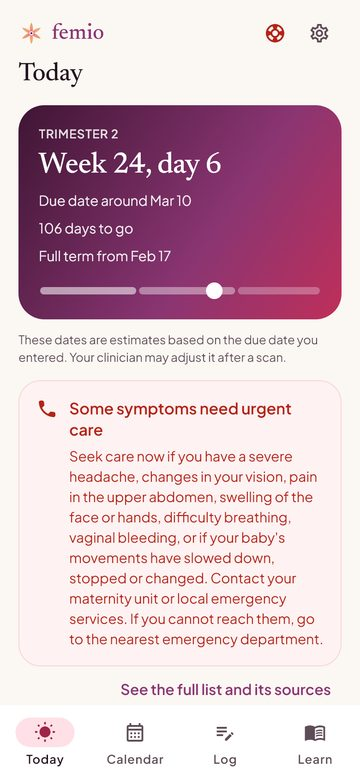
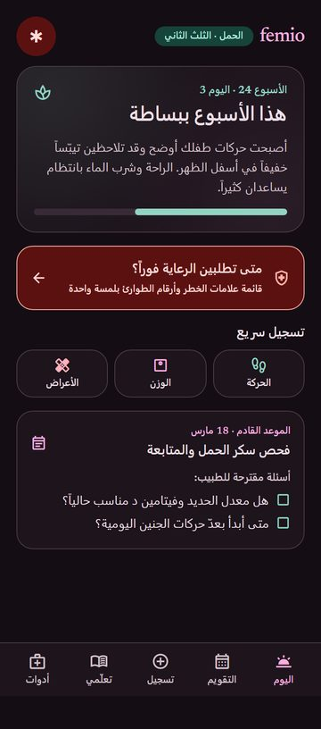
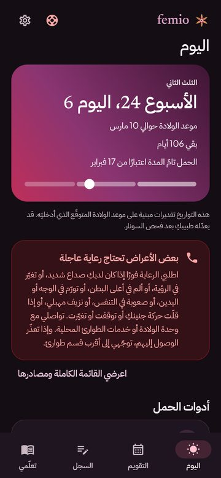
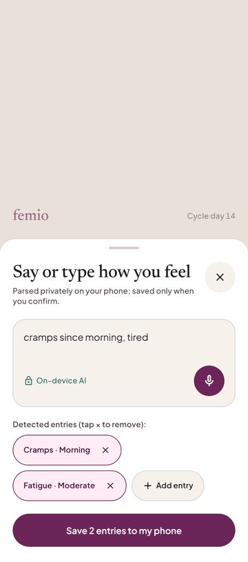
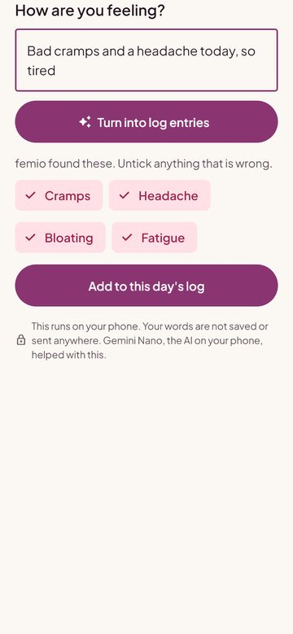
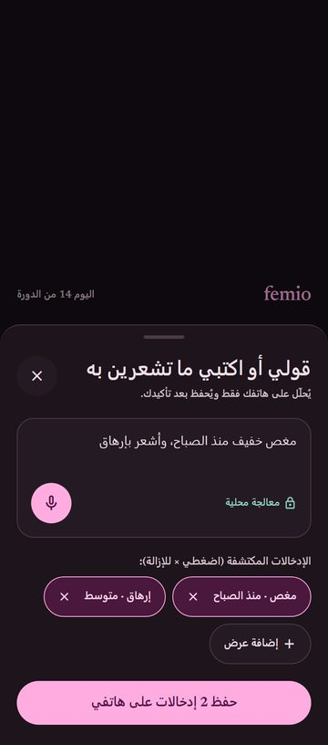
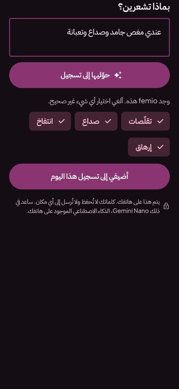
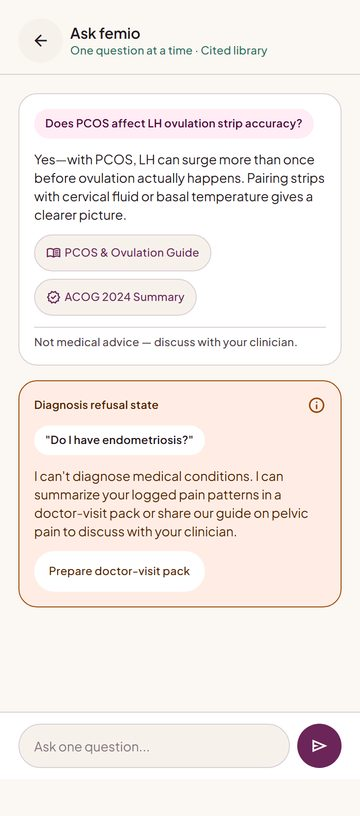
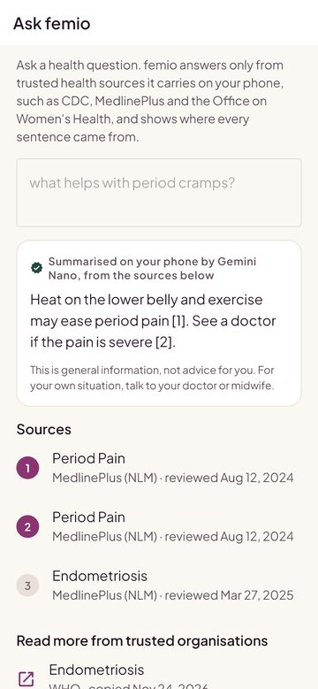
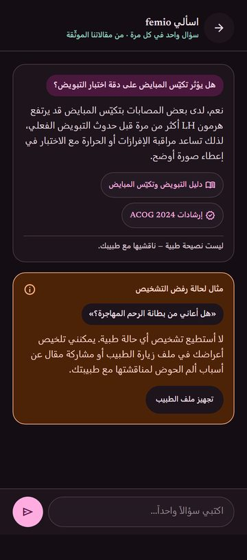
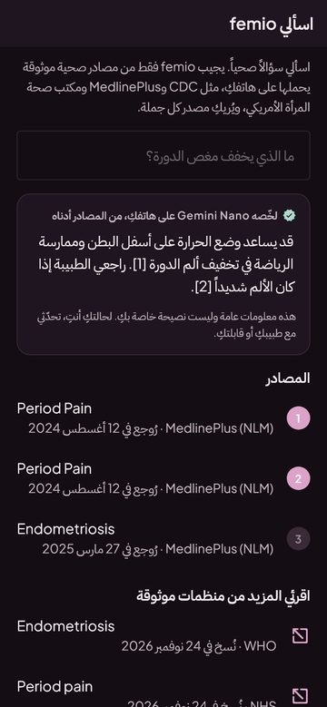
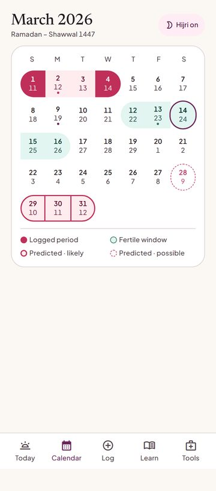
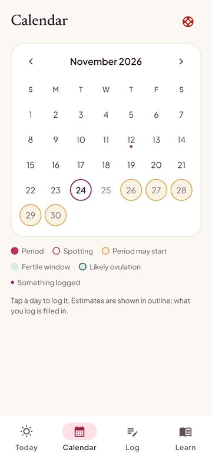
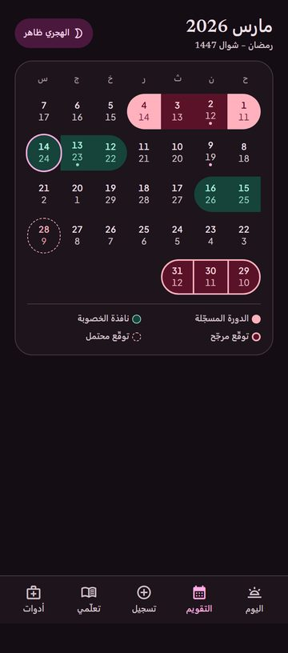
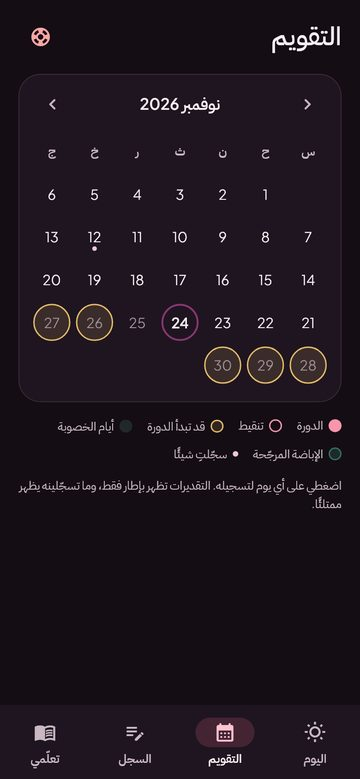
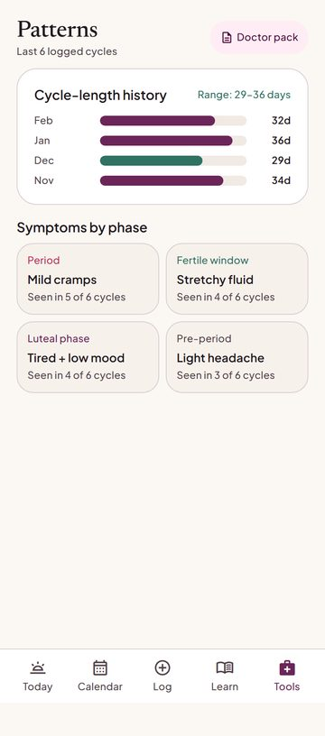
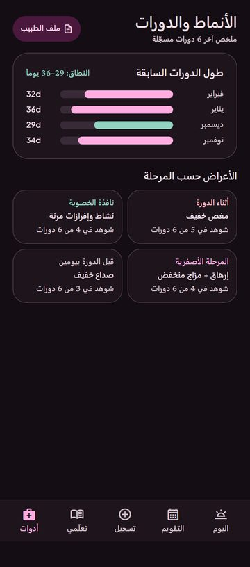
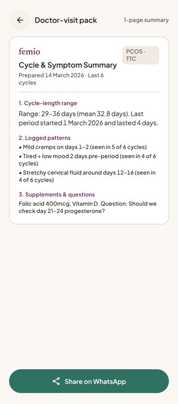
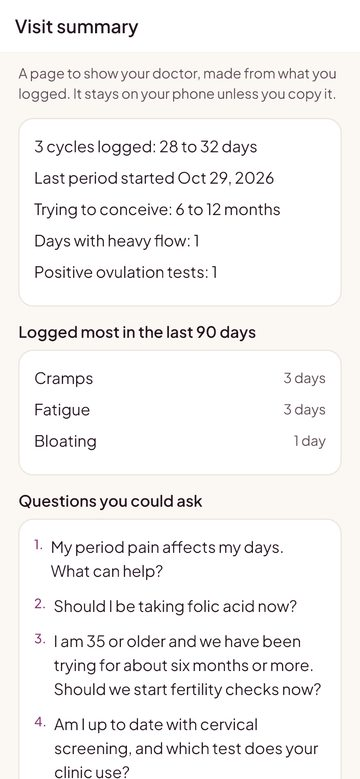
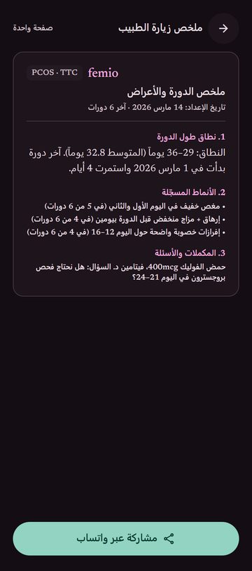
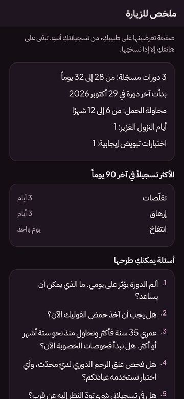
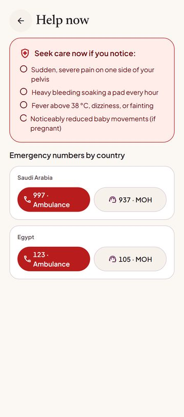
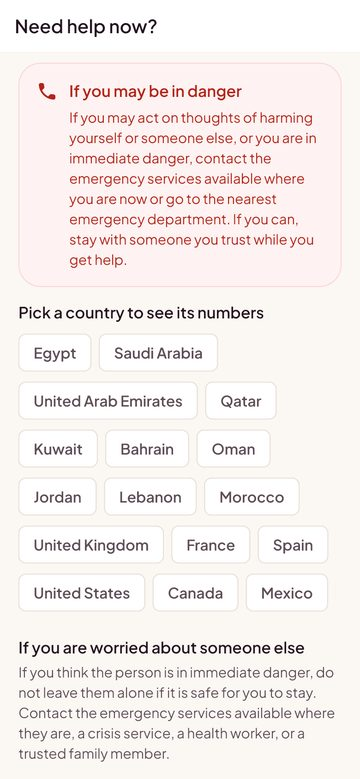
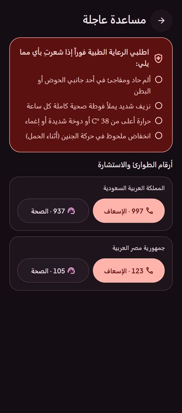
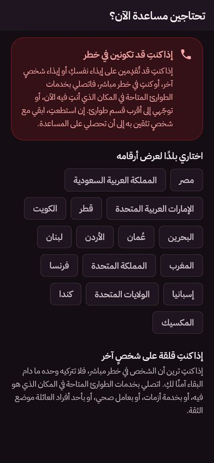